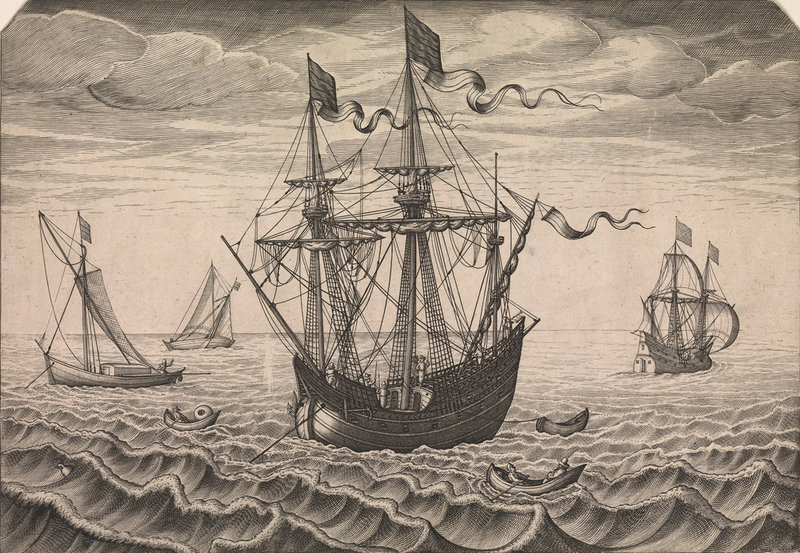
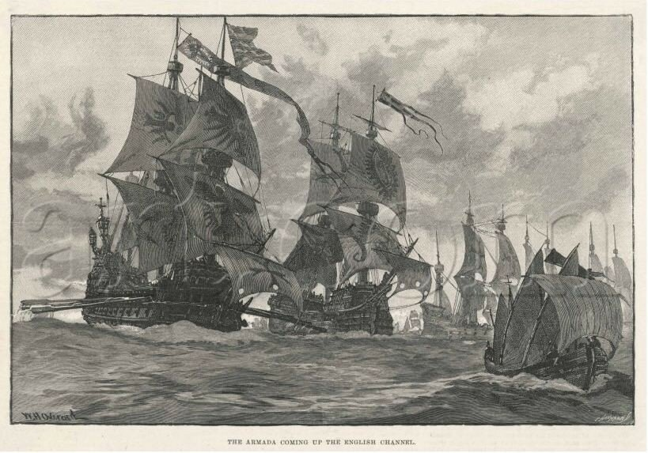

Но если отдан уж приказ,
Непослушанье безрассудно...
Л. А. Мей. Забытые ямбы

Пока Армада медленно продвигалась на север, преследуемая постепенно сокращавшимся флотом англичан, Медина-Сидония занялся одним неприятным делом. С борта флагмана трижды были произведены выстрелы из пушки, призывающие командиров кораблей собраться на совет, но эти сигналы были проигнорированы. В конце концов шлюпки с флагманского галеона доставили капитанов на борт Сан Мартина. Взбешенный капитан-генерал спросил их: «Вы слышали выстрелы из пушки?» Капитаны подтвердили, что слышали. «Тогда почему вы не прибыли?» Ответ привел герцога в ярость: «Мы подумали, что ваш корабль тонет и нам нужно спешно убираться.» Повисло долгое молчание. «Повесить изменников», – приказал Медина-Сидония.
Robert Hutchinson, THE SPANISH ARMADA. Weidenfeld & Nicolson. London, 2013 г. Стр. 172

Будучи, как вы знаете, столь бесславно осужденным на смерть и увидев жестокость, с какой был вынесен приговор, я потребовал, со всем напором и яростью, разъяснить, почему на меня обрушили такое жестокое оскорбление и бесчестье. Я служил Королю как верный солдат и преданный слуга во всех сражениях и боях с кораблями противника, из которых галеон, которым я командовал, всегда выходил с тяжелыми повреждениями, с большим числом убитых и раненых на борту. В своем требовании я настаивал, чтобы мне была предоставлена копия приговора, чтобы было проведено юридическое расследование с опросом трехсот пятидесяти человек, которые находились на борту галеона и если хоть один из них посчитает меня виновным, то можно меня четвертовать. Ни меня, ни вступившихся за меня джентльменов не пожелали выслушать, заявив, что герцог уединился и не желает ни с кем разговаривать, поскольку в день, когда начались мои неприятности, он получил известие о потере двух португальских галеонов Сан Матео и Сан Фелипе … и о том, что большая часть тех, кто находился на них, были изрублены на куски и погибли. И пока герцог находился в своей каюте, его советники публично творили несправедливость тут и там по отношению к жизни и репутации невиновных людей.
Галеон Сан Педро, на котором я находился, получил много повреждений от попадания тяжелых пушечных ядер в различные части корабля. И хотя проводился незамедлительный ремонт, который был возможен в то время, оставались еще скрытые повреждения и отверстия, через которые поступала вода. После жестокого боя 8 августа, продолжавшегося с утра до семи часов вечера, мы оказались у берегов Кале. Все это время противник преследовал нас, и Армада отступала. И вот когда противник прекратил преследование, некоторые из кораблей Армады стали приводить себя в порядок и устранять полученные повреждения. В тот день, к своему глубокому сожалению, я пошел отдохнуть, так как не спал уже десять суток, а штурман, плохой парень, (un piloto mal hombre ) ничего не сказав мне, поставил паруса и повел корабль вперед по курсу Армады, обогнав флагманский корабль (Capitana) примерно на две мили, как это сделали и другие корабли, чтобы совершить ремонт.
Когда мы стояли с убранными парусами, осматривая полученные кораблем повреждения, к борту подошел паташ (pataxe) с приказом герцога прибыть на борт флагмана, что я и сделал… Но прежде чем я достиг флагмана, на другом корабле вышел приказ о приговоре к позорной смерти мне и второму джентльмену, капитану урки по имени дон Кристобал де Авила, который также вышел вперед намного дальше моего галеона. Когда я узнал об этом жестоком приговоре, я сразу же понял, что должен со всей энергией и яростью противостоять несправедливости. Тем более что герцог ничего не знал об этом приговоре, так как находился в уединении…
Все это устроил дон Франсиско Бобадилья единственный, кто может отдавать и отменять приказы по Армаде, он и другие из его окружения, чьи дьявольские дела хорошо известны. Он распорядился, чтобы меня направили на корабль генерального прокурора армады. И я оказался там. И хотя генеральный прокурор Мартин де Аранда был суров, он выслушал меня и запросил конфиденциальную информацию обо мне. Он убедился, что я служил Королю как хороший солдат, поэтому не стал спешить с приведением в исполнение приказа обо мне. Он написал обо мне герцогу и попросил письменного приказа, написанного и подписанного лично им, и лишь после этого он приведет приговор в исполнение. Прокурор дал разрешение на отправку вместе с этим его письмом моего письма капитан-генералу, которое заставило герцога внимательно подойти к делу. В ответе герцога содержалось указание отложить исполнение приговора относительно меня, хотя осталось в отношении дона Кристобала, которого повесили с большой жестокостью и бесчестьем. Бог спас меня, потому что я был невиновен.